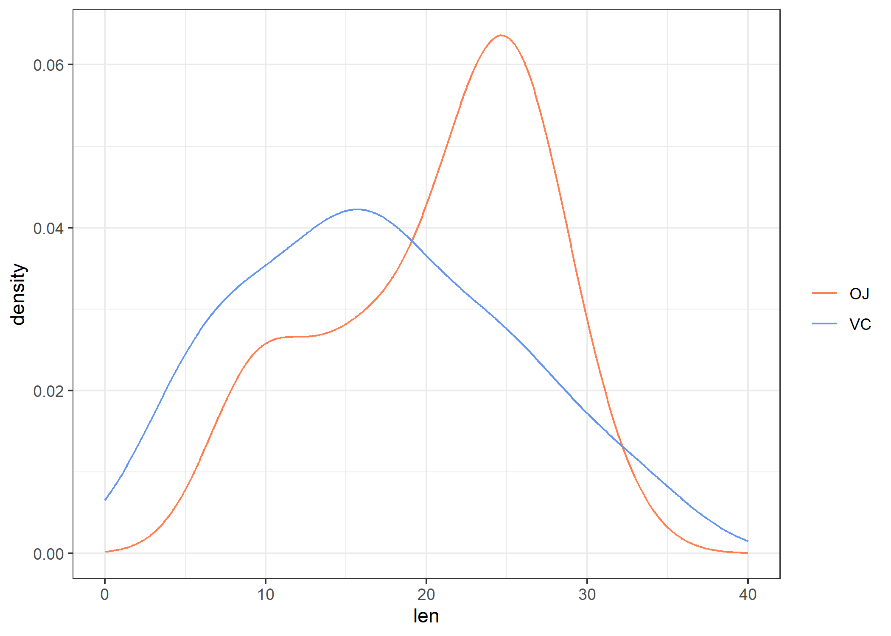

lattice : graphiques et formules
Bien que l’on ait fait le choix de présenter principalement l’extension ggplot2 plutôt que l’extension lattice, celle-ci reste un excellent choix pour la visualisation, notamment, de panels et de séries temporelles. On trouve de très beaux exemples d’utilisation de lattice en ligne, mais un peu moins de documentation, et beaucoup moins d’extensions, que pour ggplot2.
On peut trouver en ligne un support de cours détaillé (en anglais) de Deepayan Sarkar (https://www.isid.ac.in/~deepayan/R-tutorials/labs/04_lattice_lab.pdf), également l’auteur de l’ouvrage Lattice: Multivariate Data Visualization with R (http://lmdvr.r-forge.r-project.org/).
Les bases des graphiques lattice
R dispose de deux principaux systèmes graphiques : un système de base contrôlé par le package graphics et le système grid, sur lequel se basent à la fois les packages lattice et ggplot2. Ce système fournit les mêmes fonctionnalités de base que graphics mais offre une gestion de l’arrangement des objets graphiques plus développée, et surtout la possibilité d’utiliser ce que l’on appelle des graphiques en treillis. De plus, les graphiques peuvent être mis à jour très simplement, disposent de thèmes de couleur pré-définis, et offrent un certain degré d’interactivité, avec ou sans le package plotly. Enfin, la syntaxe est plus homogène et grandement simplifié, grâce à l’usage de formules.
De l’intérêt des formules R
Voici par exemple comment afficher la courbe de densité (i.e., la version continue et “lissée” d’un histogramme) de deux séries d’observations définies par les niveaux du facteur supp dans le data frame ToothGrowth, disponible dans les exemples de base de R. Notons que l’on souhaite également faire apparaître les distributions univariées, un peu à l’image de ce que fournit rug. Or cette fonction ne permet pas d’exploiter une variable de groupement, donc il sera nécessaire de gérer tout cela manuellement. Voici les instructions permettant de générer le graphique désiré :
plot(density(ToothGrowth$len[ToothGrowth$supp == "OJ"]), main = "",
xlab = "len", las = 1, lwd = 2, col = "coral")
lines(density(ToothGrowth$len[ToothGrowth$supp == "VC"]), lwd = 2,
col = "cornflowerblue")
points(x = ToothGrowth$len[ToothGrowth$supp == "OJ"], y = runif(length(ToothGrowth$len[ToothGrowth$supp ==
"OJ"]), min = -0.001, max = 0.001), col = "coral")
points(x = ToothGrowth$len[ToothGrowth$supp == "VC"], y = runif(length(ToothGrowth$len[ToothGrowth$supp ==
"VC"]), min = -0.001, max = 0.001), col = "cornflowerblue")
legend("top", levels(ToothGrowth$supp), col = c("coral", "cornflowerblue"),
lty = 1, bty = "n")Il y a plusieurs points à retenir dans les instructions ci-dessus : (1) il est nécessaire de définir les deux courbes de densité et les deux distributions univariées, en prenant garde à bien indiquer comment sélectionner les observations (OJ ou VC) en préfixant systématiquement le nom des variables par le nom du data frame ; (2) la définition des couleurs se fait manuellement et si l’on souhaite changer de thème de couleur, il faudra mettre à jour l’ensemble des instructions, en prenant garde à ce que la lgende reste synchronisée avec les courbes de densité et les nuages de points ; et, bien entendu, (3) il est nécessaire de gérer soi-même la légende, ce qui signifie se rappeler les couleurs et l’ordre des niveaux du facteur considéré, ainsi que les axes graphiques dans le cas où l’on souhaite les maintenir coordonnés sur plusieurs panneaux graphiques.
Voici le même graphique avec lattice :
lattice
Avec ggplot2, cela donnerait :
library(ggplot2)
ggplot(data = ToothGrowth, aes(x = len, color = supp)) + geom_line(stat = "density") +
geom_rug()
ggplot2
Clairement, on gagne en nombre d’instructions à taper dans la console et en clarté d’expression également, grâce notamment à l’usage de formules permettant de décrire la relation entre chacune des variables utilisées pour construire la représentation graphique.
Les formules R
Les formules utilisées dans le système lattice sont presque identiques à celles retouvées dans les modèles d’analyse de variance (aov) ou de régression (lm). En réalité, la notation par formule qu’utilise R est celle proposée par Wilkinson et coll. dans les années 70 pour schématiser la relation entre plusieurs variables dans un plan d’expérience. Plus spécifiquement, l’idée revient à exprimer une relation fonctionnelle
, symbolisée par l’opérateur ~, entre une variable réponse y et une ou plusieurs variables explicatives. Disons, pour simplifier, que y est une variable numérique, de même que x, et que a et b sont des variables catégorielles (des facteurs dans le langage R). Voici les principales relations auxquelles on peut s’intéresser dans un modèle statistique linéaire :
y ~ x: régression linéaire simple,y ~ x + 0: idem avec suppression du terme d’ordonnée à l’origine,y ~ a + b: ANOVA avec deux effets principaux,y ~ a * b: idem avec interaction (équivalent à1 + a + b + a:b),y ~ a / b: idem en considérant une relation d’emboîtement (équivalent à1 + a + b + a %in% b).
Un exemple typique d’utilisation pour un modèle d’ANOVA à trois facteurs est donné ci-dessous :
fm <- y ~ a * b * c # modèle de base (A, B, C, AB, AC, BC, ABC)
mod1 <- aov(fm, data = dfrm) # estimation des parame`tres du mode`le
update(mod1, . ~ . - a:b:c) # suppression de l'interaction ABCQuant on y réfléchit un peu, les relations ci-dessus peuvent très bien s’appliquer au cas de la composition graphique : y ~ x signifie dans ce cas que l’on souhaite représenter l’évolution de y en fonction de x. En d’autres termes, on s’intéresse à un nuage de dispersion. Le package lattice ajoute les notations suivantes :
~ x: dans le cas où l’on ne décrit qu’une seule variable (i.e., sa distribution),a | b: dans le cas où l’on considère la variablea, conditionnellement à la variableb, c’est-à-dire les niveaux deapour chacun des niveaux deb(ce qui revient à l’interactiona:bcitée ci-dessus).
Cette dernière notation se révèlera être très utile dans le cas des représentations graphiques conditionnelles, par exemple lorsque l’on souhaite afficher la distribution d’une variable numérique dans différents groupes d’individus définis par les niveaux d’une variable catégorielle, ou lorsque l’on souhaite surligner d’une couleur différentes les points d’un diagramme de dispersion selon la valeur prise par une troisième variable.
Les formules R sont omniprésentes dans les modèles statistiques, dans les graphiques, mais également dans certaines commandes d’agrégation. Au bout du compte, avec une même formule il est possible de calculer des moyennes de groupes, réaliser une ANOVA et construire la représentation graphique associée. En voici un exemple :
Principaux types de graphiques avec lattice (et ggplot2)
Même si le package lattice fournit moins de commandes que ggplot2, il n’en demeure pas moins qu’il est tout aussi facile de réaliser des représentations graphiques simples en un tour de main. Voici quelques exemples de représentations graphiques uni- et bivariées. Les données d’illustration sont les mêmes que celles utilisées plus haut (ToothGrowth): il s’agit d’une expérience de biologie dans laquelle on s’intéresse à la croissance des odontoblastes de cochons d’inde quantifiée par leur longueur (variable len) lorsqu’on administre à ces derniers de la vitamine C soit sous forme d’acide ascorbique soit sous forme de jus d’orange (supp, OJ = jus d’orange), à différentes doses (dose, en mg).
Histogramme
Un histogramme d’effectifs se construit avec histogram. Puisqu’il s’agit de décrire une seule variable, ou sa distribution plus précisément, la formule à employer ne contient pas de variable à gauche du symbole ~ et l’on se contente d’écrire la variable à résumer à droite dans la formule :
L’option type = "count" permet de forcer la représentation sous forme d’effectifs puisque, par défaut, c’est la densité qui est représentée. La formulation équivalente sous ggplot2 serait :
(Ou alors qplot(x = len, data = ToothGrowth, geom = "histogram", binwidth = 5).)
En ajoutant une facette
pour tenir compte de la variable supp, cela donne :
Avec ggplot2, les facettes sont gérées grâce aux commandes facet_grid et facet_wrap.
Courbe de densité
Une courbe de densité se construit à l’aide de densityplot et la syntaxe est strictement identique à celle de histogram, à l’option type= près.
Il est possible de régler le paramètre de lissage à l’aide de l’option bw= : des valeurs plus élevées résultent en une courbe beaucoup plus lissée (essayez avec bw = 10 !) et donc beaucoup moins sensible aux variations locales de la densité.
À ce stade, on peut en profiter pour discuter les options de conditionnement sur une variable catégorielle et la manière de gérer la présentation graphique : dans le cas d’un histogramme, il est délicat de superposer deux distributions ou plus sur le même graphique, même en ajoutant de la transparence, d’où l’idée de représenter les distributions dans des panneaux graphiques séparés. C’est ce qu’on a réalisé en indiquant que l’on souhaitait décrire la variable len conditionnellement aux valeurs prises par supp (~ len | supp). Dans ce cas, l’opérateur | invoque une facette et un decoupage en autant de panneaux graphiques qu’il y a de valeurs uniques dans la variable supp. Une autre approche consiste à utiliser l’option groups=, et dans ce cas les différentes distributions seront affichées dans le même panneau graphique. Dans le cas d’une courbe de densité, cela revient à les superposer sur la même fenêtre graphique, avec un système de coordonnées unique. Les deux options de conditionnement peuvent être combinées naturellement.
Voici un exemple de graphique conditionnel un peu plus élaboré :
densityplot(~len, data = ToothGrowth, groups = supp, auto.key = TRUE,
xlab = "len", par.settings = list(superpose.line = list(col = c("coral",
"cornflowerblue"))))
Au passage, on en a profité pour modifier le thème de couleur. Notez qu’en utilisant par.settings=, lattice se charge de coordonner les couleurs de la légende (auto.key = TRUE) avec celle des éléments graphiques correspondants.
L’équivalent sous ggplot2 revient à peu près à l’instruction suivante :
ggplot(data = ToothGrowth) + aes(x = len, colour = supp) + geom_line(stat = "density") +
expand_limits(x = c(0, 40)) + scale_colour_manual("", values = c("coral",
"cornflowerblue")) + theme_bw()
Diagramme en barres
Les diagrammes en barres peuvent avantageusement être remplacés par des diagrammes en points, tels que les diagrammes de Cleveland (cf. plus loin), mais en attendant voici comment en réaliser un à l’aide de barchart à partir de données agrégées :
library(latticeExtra, quietly = TRUE)
m <- aggregate(len ~ supp + dose, data = ToothGrowth, mean)
barchart(len ~ dose, data = m, groups = supp, horizontal = FALSE,
auto.key = TRUE, par.settings = ggplot2like())Notons que par.settings= permet non seulement de fournir des options additionnelles pour contrôler le rendu des éléments graphiques (couleur, type de ligne ou de symboles, etc.) mais également d’utiliser des thèmes graphiques disponibles dans le package latticeExtra.
Diagramme de type boîtes à moustaches
Les diagrammes en forme de boîtes à moustaches sont obtenus à l’aide de la commande bwplot. Voici un exemple d’utilisation :
L’option pch= permet de contrôler la manière dont la médiane est figurée dans la boîte. Par défaut il s’agit d’un simple point, mais si l’on souhaite utiliser les représentations plus classiques, telles que celles trouvées dans boxplot ou geom_boxplot, il suffit de suivre l’exemple ci-dessus. Notons que dans le cas de cette représentation graphique, le conditionnement sur la variable supp est d’emblée réalisé par l’utilisation d’une formule invoquant la variable de conditionnement à droite de l’opérateur ~.
Diagramme en points
Le même type de représentation graphique peut être obtenu en utilisant directement les données individuelles, et non leur résumé en cinq points (tel que fournit par summary et exploité par bwplot). Dans ce cas, il s’agit de la commande dotplot, qui permet de construire des diagrammes de Cleveland (moyenne ou effectif total calculé pour une variable en fonction des niveaux d’une autre variable) ou, dans le cas où la variable à résumer consiste en une série de mesures individuelles numériques, des diagrammes de dispersion. Voici une illustration pour ce dernier cas de figure :
Diagramme de dispersion
Enfin, un diagramme de dispersion est construit à l’aide de la commande xyplot.
Même si l’exemple ne s’y prête guère, on en a profité pour ajouter une courbe lowess de régression afin d’indiquer la tendance de covariation entre les deux variables numériques. L’aide en ligne pour xyplot n’est pas très utile dans ce cas, et il faut en fait aller regarder les options de personnalisation disponibles dans la sous-fonction correspondante : panel.xyplot.